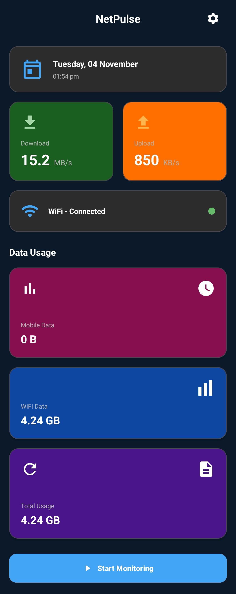
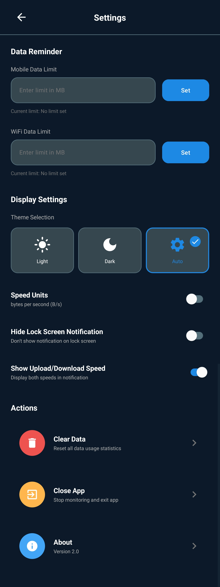
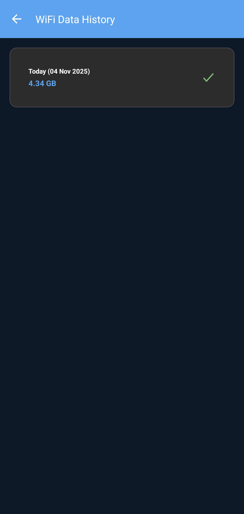

NetPulse brings a complete UI overhaul, persistent data history, a dynamic status bar icon, and a host of new settings — all wrapped in a modern, card-based interface with full light & dark mode support.
Each data card opens a 60-day usage log.
Complete UI overhaul from the ground up.
Usage saved every minute & on service stop.
Full theme support with auto-follow system.
A major release featuring a complete UI overhaul, persistent data history, a dynamic status bar icon, and a host of new settings.
A modern, card-based interface that fully supports both Light and Dark modes.
The static notification icon is replaced with a text-based icon showing your live download speed directly in the status bar.
Each data card is now clickable, opening a screen that shows your last 60 days of usage history.
A new settings screen gives you full control over the app's theme, units, and notifications.
Set data limits for both Mobile and WiFi to receive alerts when you approach your cap.
All data usage is now saved, surviving app restarts and phone reboots.
A clean, single-column layout with side-by-side speed cards, live status, and clickable data history.

Real-time speeds & daily usage.

Trend badges & percentage changes.

Theme, units, limits & actions.
From dynamic titles to persistent storage, every piece of the data history system is built to be reliable and intuitive.
Header updates based on the data type being viewed (e.g., "Mobile Data History").
Quick navigation back to the home screen with a built-in back icon.
Displays the last 60 days of data in reverse chronological order.
Shows "No history data available" if no records exist.
Always appears first, updates in real-time, with full date including weekday.
Show date, total usage, and percentage change compared to the previous day.
Green for increase, red for decrease, gray for "N/A" when no comparison is available.
Usage is displayed in B, KB, MB, or GB automatically.
History is saved in SharedPreferences for long-term persistence.
Data survives app restarts and device reboots.
Usage is saved every 60 seconds and at midnight daily.
Counters reset to zero at midnight, every day.
Download NetPulse v2.0 today and experience the next generation of internet speed monitoring — real-time analytics, elegant dashboards, and seamless tracking, all in one sleek app.
Version 2.0 · Free Download · Android